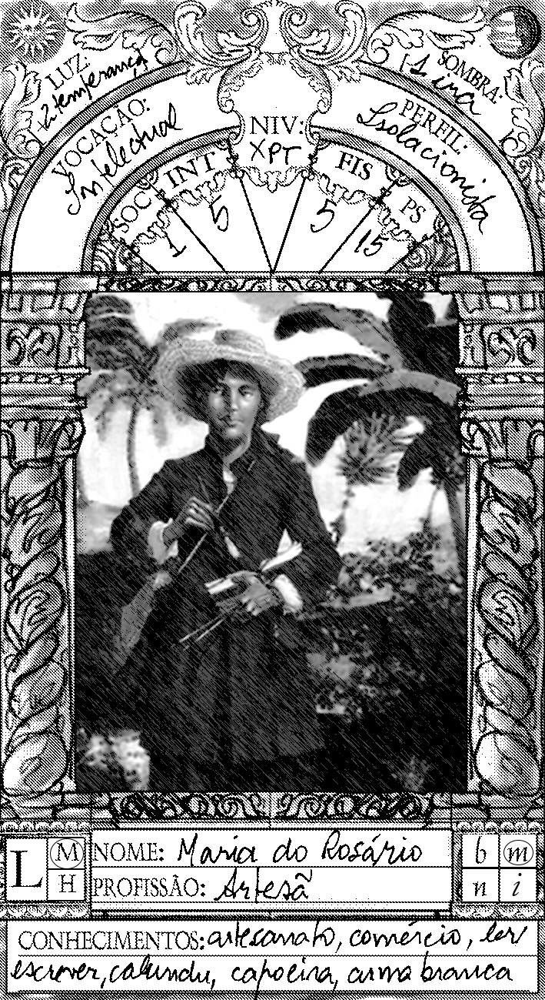

home
jobs
portfolio

Pontificial Catholic University of Rio de Janeiro:
Ph.D Design (2004 - 2008)
Pontificial Catholic University of Rio de Janeiro:
Master's Design (2000 - 2002)
Rio de Janeiro State University:
art theory graduation (1998 - 1999)
Federal University of Rio de Janeiro: bachelor's Biology (1988 - 1994)